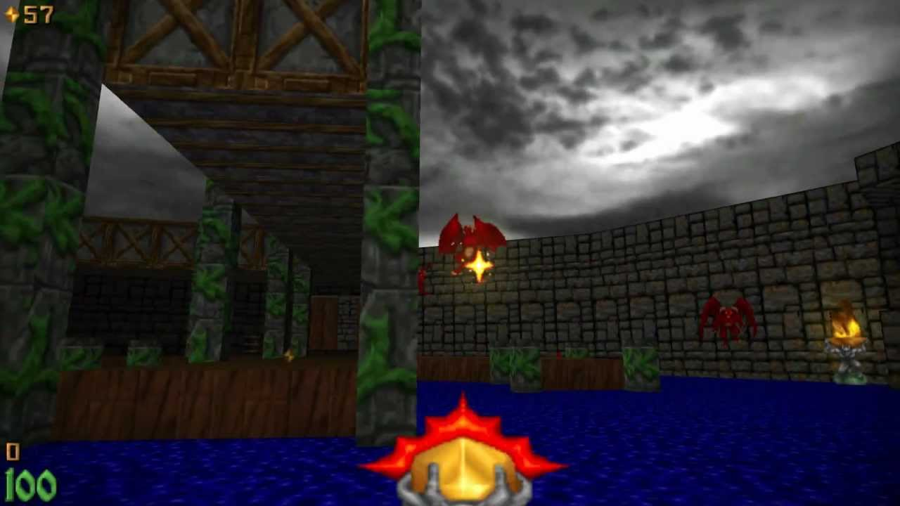

É um jogo de FPS com elementos de fantasia desenvolvido pela Raven Software, publicado pela id Software e distribuído pela GT Interactive, lançado originalmente em 23 de dezembro de 1994. Utilizando uma engine modificada de Doom, Heretic foi um dos primeiros jogos com a possibilidade de fazer o giro de vista não somente na horizontal, mas também na vertical (ou seja, o jogador pode mover o seu campo de visão tanto para os lados quanto para cima e baixo), além de ter inovado com um sistema de inventário de itens em que o personagem pode guardar e utilizar quando quiser.
O jogo assume o papel de um herói (sem nome, assim como em Doom) cuja sua raça, os Sidhe foi quase completamente eliminado por uma horda de monstros vindos de outra dimensão (facilmente percebe-se a influência de Doom). A versão original do jogo é composta por três episódios, cada um com oito fases e mais uma secreta.
Os inimigos do game são compostos por inúmeros tipos de criaturas fantasiosas, como por exemplo: as gárgulas voadoras vermelhas (Gargoyles), os monstros de pedra (Golens), os guerreiros zumbis (Undead Warriors) que atiram machados de ácido e sangue, os discípulos de D’Sparil (um dos três Serpent Riders, principais antagonistas do game) vestidos de preto e dourado e que atiram projéteis mágicos de cor violeta, Iron Lich, uma enorme caveira de ferro que porta um elmo com chifres e que expele forças elementais, uma criatura com enormes lâminas no lugar das garras (Sabreclaws), pequenos dragões que soltam bolas de fogo (Weredragons), etc.
Existem oito armas no game, que podem ter suas respectivas capacidades destruidoras aumentadas quando se usa chamado Tomo do Poder (Tome of Power). Entre elas, estão: o bastão (a mais básica de todas), as luvas do necromante (Gauntlets of necromancer) que soltam uma descarga elétrica, Elven Wand (um bastão élfico que atira pedras amarelas), o cajado da Fênix (Phoenix Rod) que dispara bolas de fogo capazes de matar a maioria dos inimigos, sendo a arma mais poderosa do game, podendo causar danos até ao próprio jogador dependendo da distância em que for lançada, etc.
O jogo inovou ao criar a engine do inventário, onde é possível guardar itens chamados de artefatos, para serem usados no momento em que o jogador achar necessário, sendo também útil para o PVP, fazendo de Heretic um ícone dos jogos on-lines. Entre eles, estão: Urna Mística (Mystic Urn), que recupera toda a saúde do player, Tomo do Poder (Tome of Power), que aumenta o poder das armas temporariamente, Asas da Ira (Wings of Wrath), que permite voar temporariamente, etc.
AD
AD